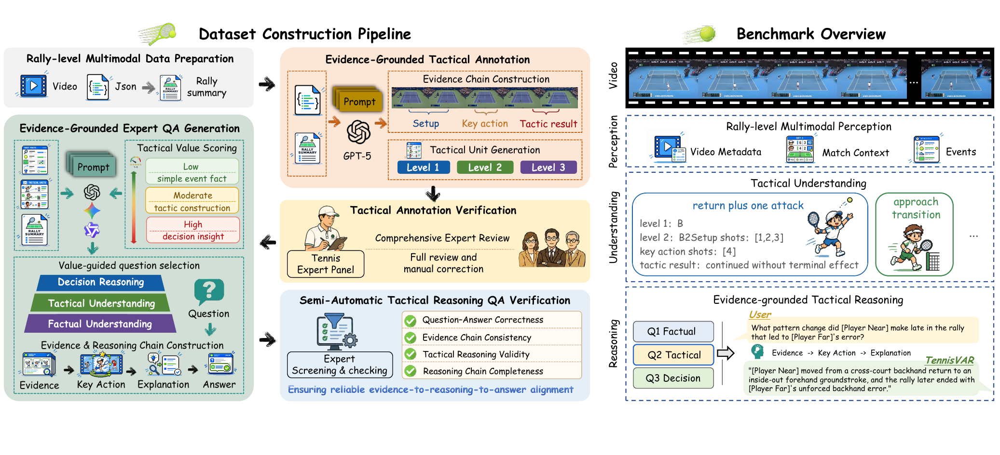
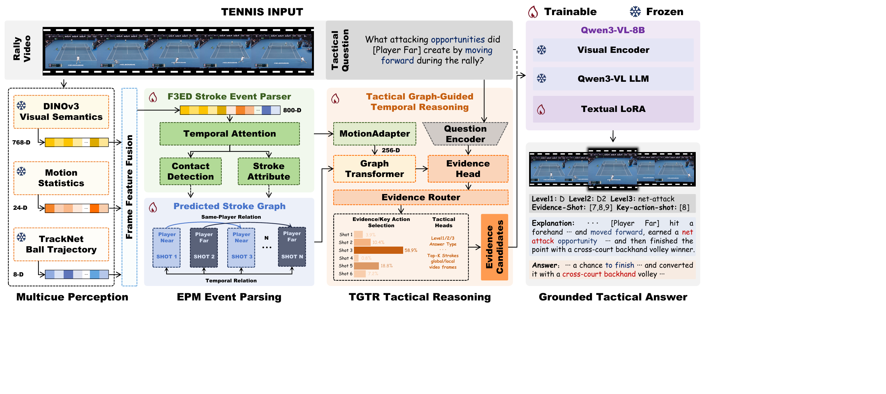
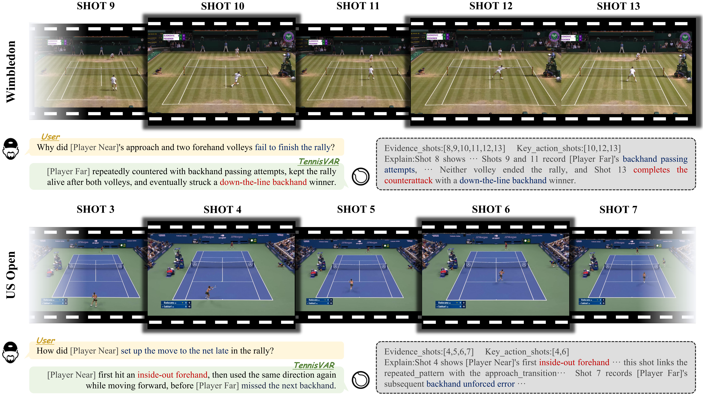

TennisVAR
A Stroke-Evidence-Grounded Multimodal Large Language Model for Tactical Reasoning in Tennis Videos
1 Xiamen University · 2 Shanghai Innovation Institute · 3 Shanghai Jiao Tong University
Abstract
Sports-video understanding is moving beyond event recognition toward explaining how actions collectively shape match progression. TennisVAR bridges this perception-to-understanding gap by modeling ordered stroke events, their tactical relations, and the evidence supporting each conclusion. The model produces grounded answers, hierarchical tactic labels, supporting strokes, and decisive key actions, making rally-level reasoning explicit and verifiable.
TRACE Benchmark
TRACE organizes rally-level perception, tactical understanding, and decision reasoning around ordered evidence chains.

TennisVAR
TennisVAR follows an event - relation - evidence - tactic reasoning paradigm for traceable tactical answers.

Qualitative Results
TennisVAR links temporally distributed strokes to its tactical answer and rationale.

BibTeX
@article{mei2026tennisvar,
title = {TennisVAR: A Stroke-Evidence-Grounded Multimodal Large Language Model for Tactical Reasoning in Tennis Videos},
author = {Mei, Yifan and Shi, Qinglin and Wu, Changli and Rao, Jiayuan and Ji, Jiayi and Cao, Liujuan},
year = {2026}
}